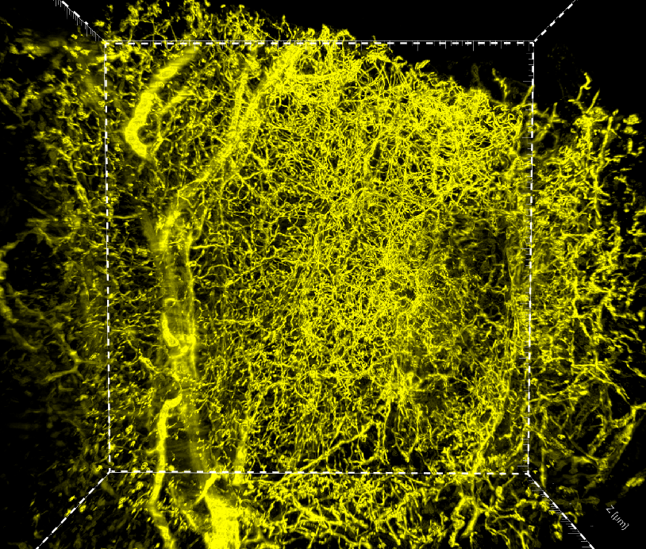
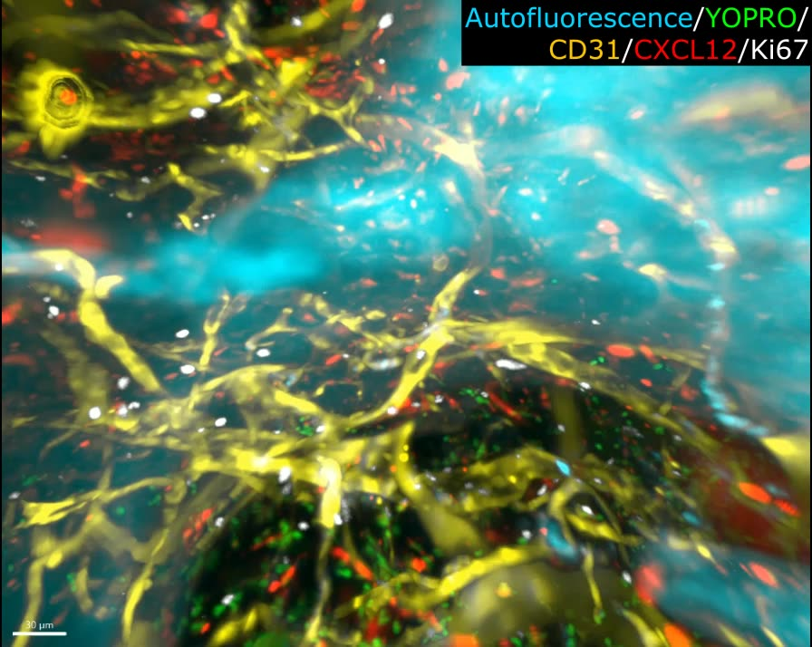
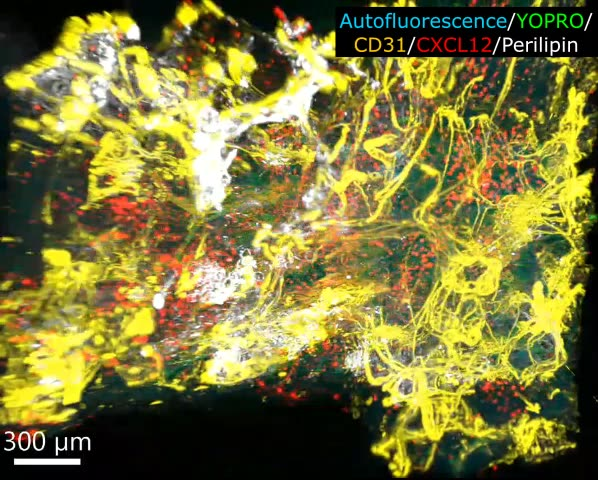
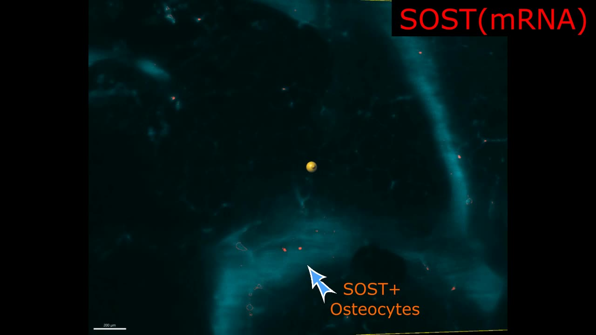
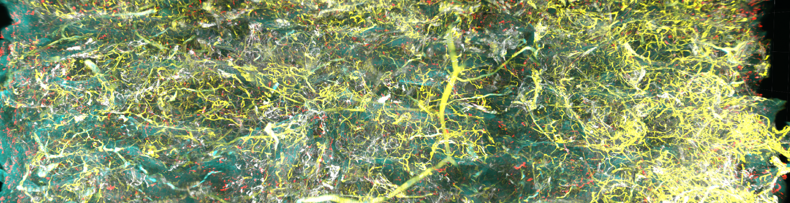

Cell Fate: Cartilage to Bone
Hypertrophic chondrocytes in the growth plate can survive and become bone-forming osteoblasts. We ask what decides this switch, and how it could be used to improve bone-building drugs and fracture repair.
Skeletal Growth · Endocrinology · 3D Molecular Imaging
We combine endocrinology, developmental biology and 3D molecular imaging of intact human bone to understand how the skeleton grows, ages and fails in disease.




Featured Research · Nature Biomedical Engineering 2026
We developed a tissue-clearing and lightsheet pipeline that renders intact human bone biopsies optically transparent — preserving native 3D architecture while enabling deep imaging of proteins and mRNAs. The result is the first quantitative 3D atlas of the human osteovascular niche.
Read the paperWhat We Do
Three connected projects — basic, translational and clinical — share one engine: 3D molecular imaging of intact bone, single-cell sequencing and mouse genetics.
Hypertrophic chondrocytes in the growth plate can survive and become bone-forming osteoblasts. We ask what decides this switch, and how it could be used to improve bone-building drugs and fracture repair.
Growth hormone acts directly on growth-plate stem cells. We study how growth-hormone treatments, including new weekly long-acting forms, affect these stem cells and metabolism — to make growth treatment for children safer.
We map diseased human bone, such as osteonecrosis of the femoral head, cell by cell in 3D, and extend rapid 3D molecular pathology to mineralised tissue.
DeepBone combines tissue clearing, whole-mount RNA and protein labelling, light-sheet microscopy and registration to micro-CT, analysed together with single-cell sequencing data.
Principal Investigator
Researcher · Department of Rheumatology and Inflammation Research
Institute of Medicine, University of Gothenburg, Sweden
I study how the skeleton grows, ages and fails in disease — at the scale of single cells inside intact tissue. My work brings together endocrinology (how growth hormone and PTH act on bone), developmental biology (growth-plate stem cells and the cartilage-to-bone cell-fate switch) and 3D molecular imaging of human bone.
In Science Translational Medicine (2026) we built a transcriptional atlas of the pubertal human growth plate and showed that growth hormone acts directly on cartilage stem cells, building on our work in PNAS (2025). In Nature Biomedical Engineering (2026) I developed DeepBone, a tissue-clearing and light-sheet pipeline for 3D RNA and protein imaging of intact human bone, and used it to compare the osteovascular niche of young and aged bone.
I trained in developmental genetics at the University of Hong Kong (PhD with Kathryn Cheah) and in growth-plate endocrinology at Karolinska Institutet (postdoc with Andrei Chagin), and now lead an independent line on 3D molecular imaging of human bone in Gothenburg.

Whole aged human bone biopsy — 3D reconstruction showing the full ~3.5 mm depth of an intact human bone biopsy. Yellow: CD31⁺ vasculature; cyan: bone matrix; white: adipocytes. Nat Biomed Eng 2026, Fig 3e.
Our Toolkit
We combine 3D imaging of intact tissue with single-cell genomics and mouse genetics to produce integrated, multimodal datasets of the skeleton.
Research in Motion
Supplementary videos from Nature Biomedical Engineering (2026) — direct visualisation of the human osteovascular niche.
Video 1 · Vasculature in aged human bone marrow
Visualisation and quantification of the CD31⁺ vasculature in aged human bone marrow.
Video 2 · mRNA detection inside the bone matrix
DeepBone detects mRNA transcripts (SOST) inside the mineralised human bone matrix.
Video 3 · BM-MSCs and proliferating cells
Spatial arrangement of BM-MSCs (CXCL12⁺), proliferating cells (Ki67⁺) and capillaries in young human bone.
Video 4 · BM-MSCs, capillaries and adipocytes
Spatial arrangement of BM-MSCs, capillaries and adipocytes (perilipin⁺) in young human bone.
The Lab
Nelson Chu, PhD
Principal Investigator
Skeletal Growth · 3D Molecular Imaging
We are building a team. If you are excited about skeletal biology, endocrinology or 3D imaging of human tissue, we would like to hear from you — PhD students, postdocs and visiting students are welcome.
Press Coverage
Training & Affiliations
Get In Touch
We welcome collaborations with clinicians, engineers and imaging scientists, and enquiries from prospective PhD students and postdocs.